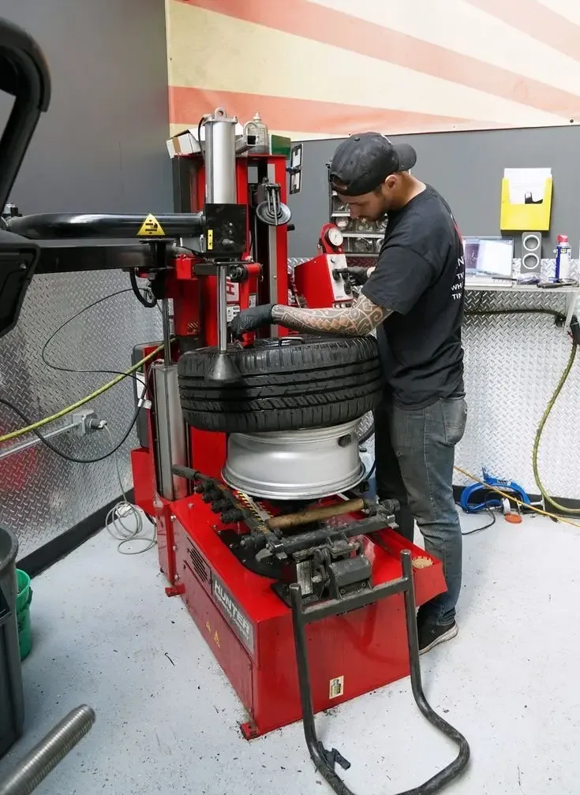
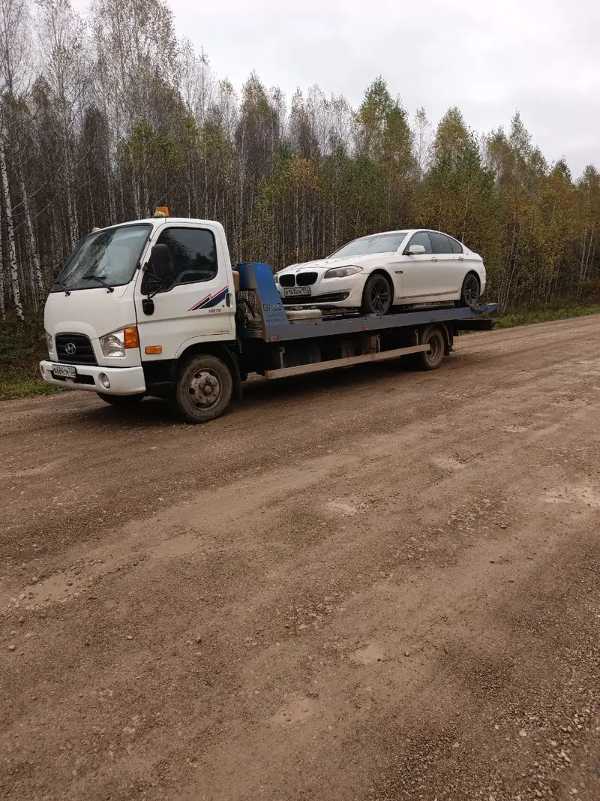
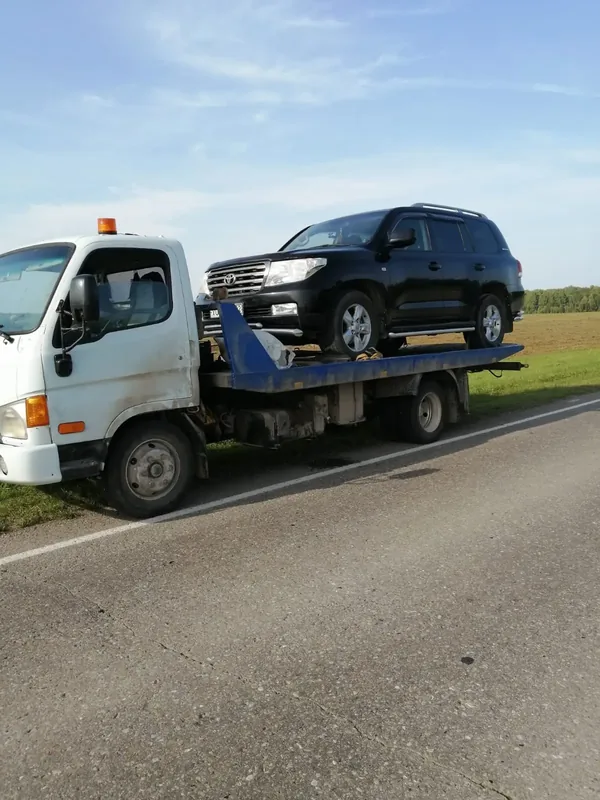
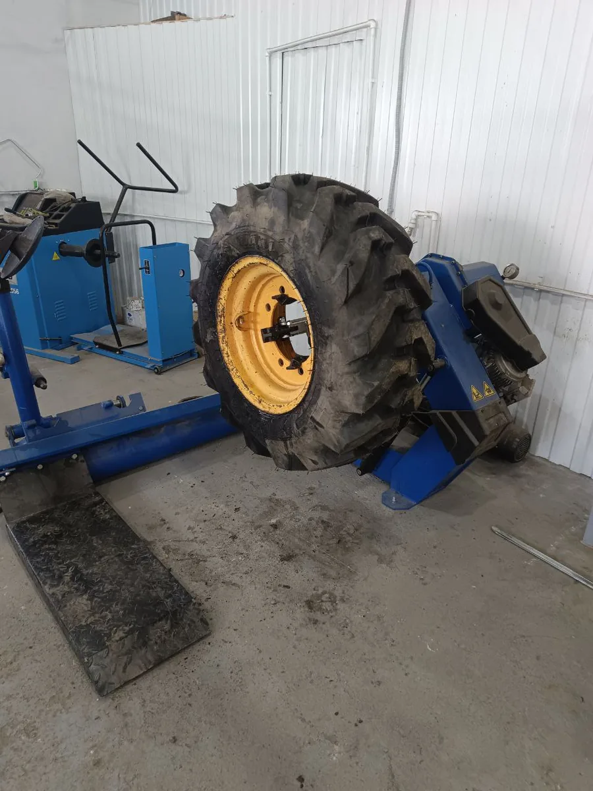
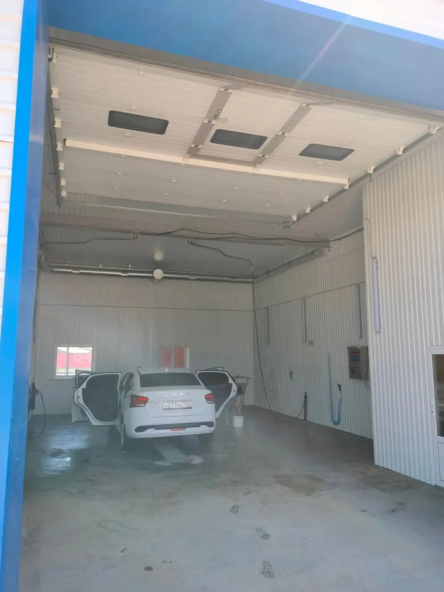
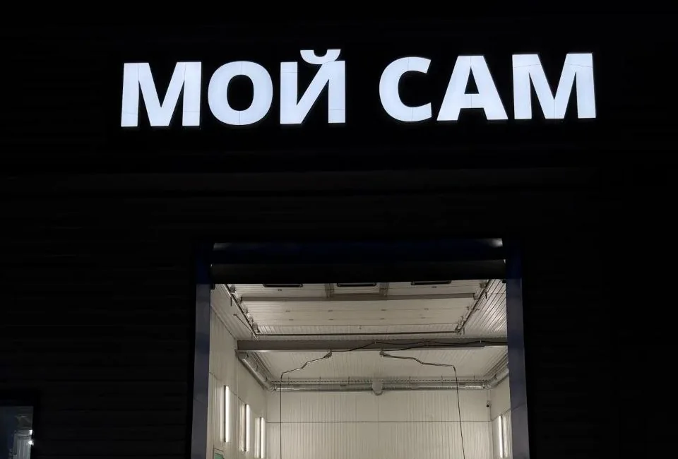
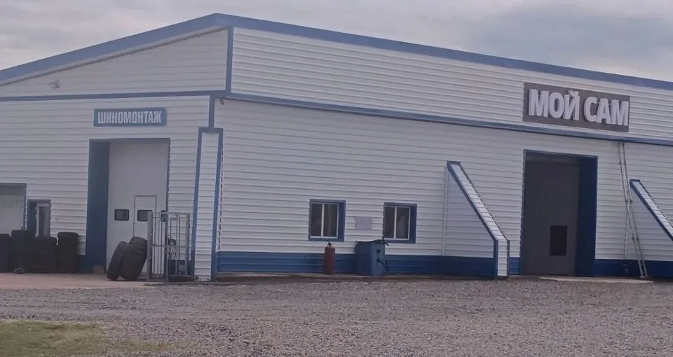

Легковой
9:00–18:00- Замена и балансировка колёс
- Дошиповка зимней резины
- Ремонт боковых порезов
- Правка литых и штампованных дисков
- Проверка и подкачка давления

Эвакуатор — круглосуточно, без выходных. Шиномонтаж — с 9:00 до 18:00. Автомойка — с 6:00 до 22:00. Позвоните — назовём цену сразу.
с. Караидель, ул. Мира, 13/11 · Одна площадка, один телефон
Подъём до 4 тонн. Приезжаем в любое время суток по Караидельскому, Мишкинскому и Аскинскому районам, в Тастубу и на трассы. Цену называем по телефону сразу, до выезда.


Два бокса на выбор — легковой и грузовой. Делаем сезонную смену, балансировку, ремонт порезов и правку дисков. Работаем с 9:00 до 18:00. В сезон бывает очередь — позвоните заранее, подскажем время.


Работаем с 6:00 до 22:00 — успеете до смены или после работы. Моем и легковые, и грузовые. Вход с вывеской «Мой сам», это та же площадка на ул. Мира, 13/11.
Пылесос — бесплатно К любой мойке, без доплаты.


Приехали поздно — звоните, встретим. Мойка работает каждый день с 6:00 до 22:00, ворота крайнего правого бокса на ул. Мира 13/11.
Позвонить на мойкуАкции и новости выходят в Telegram — там же отвечаем на вопросы по ценам и записи.
Открыть канал